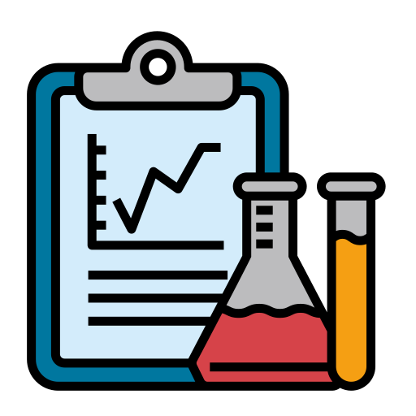

Medical Intelligence Robotic Automation
A fully automated platform leveraging AI, RPA, and Python-based web technologies to optimize clinical and administrative workflows.
Discover MIRA
A fully automated platform leveraging AI, RPA, and Python-based web technologies to optimize clinical and administrative workflows.
Discover MIRA
MIRA optimizes healthcare operations by automating key clinical and administrative processes. It reduces manual effort, improves accuracy, and ensures real-time execution of tasks using AI, RPA, and RESTful integrations.
Automatically completes patient Medicare registration without manual involvement.
Sends reminders, confirmations, updates, test results, and follow-ups.
Detects and flags billing discrepancies using automated processes.

Instantly notifies clinics and patients when results become available.
Collects patient feedback automatically after consultations.
Sends reminders, follow-ups, and rebooking options for missed appointments.
AI-driven communication tailored to patient needs and behaviors.
Designed based on unique healthcare requirements and workflows.
For decision-making, data processing, anomally detection, and insights.
Executes repetitive tasks like registration, reporting, and notifications.
Modern Python technologies powers backend logic and workflow engines.
Integrates with healthcare systems, databases, and communication tools.
Secure, automated movement of patient and clinical data.
Real-time monitoring of workflow execution and patient engagement.
MIRA dashboard provides real-time visibility into automated healthcare workflows.

Healthcare data enters through forms, APIs, or system integrations.
AI + RPA engines analyze, validate, and prepare automated actions.
Automated workflows execute tasks like emails, billing, and updates.
Dashboard display real-time status to healthcare staff.
Interested in learning more or requesting custom automation?